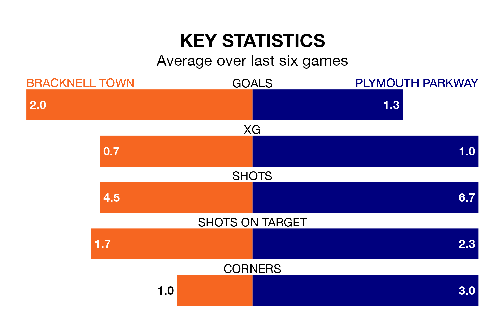

Bracknell Town face a challenge to maintain their high-scoring form at home against a tight Plymouth Parkway defence on Saturday.
With 64 goals in 34 games, Bracknell are the fourth-highest scorers in the Southern League Premier South ahead of the 3pm kick-off.
They face a Plymouth Parkway side who have scored 39 in 25 matches, but conceded only 37 goals, putting them joint-third among the league's tightest defences – only Chesham United and Gosport Borough have conceded fewer goals.
Plymouth Parkway are 19th in the table after 25 games, of which they have won eight and drawn seven, earning 31 points.
Bracknell are 12 places ahead of the visitors in seventh, with 16 wins and four draws putting them on 52 points.
Town are in good form in the Southern League Premier South, with four wins and a draw from their last six games.
With two wins and a draw over that period, Plymouth Parkway's form is much worse – they have taken seven points from 18, compared to the home team's 13.
In the last three years, Bracknell and Plymouth Parkway have played each other on three occasions. They won one each, and they drew once.
Their last meeting was on November 25, when Plymouth Parkway won 1-0 at home.
Bracknell's last match was on March 16, a 2-1 win against Hanwell Town.
Plymouth Parkway lost 3-0 against Swindon Supermarine last time out, on March 9.
Updated: 10:19 (UTC), 22/03/24